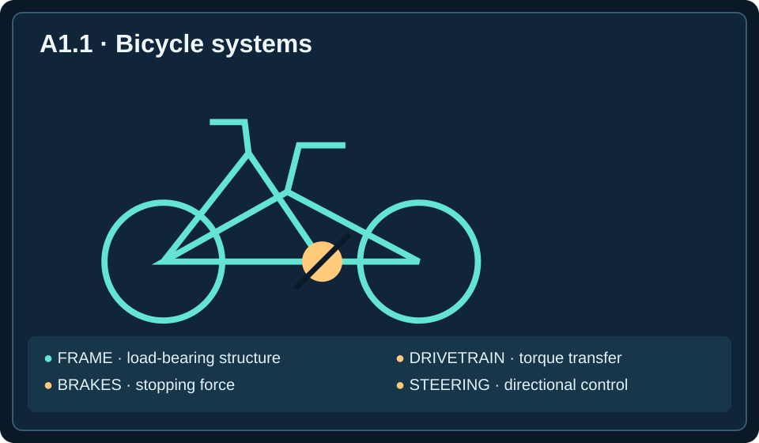

Semester objective A-O1: Explain mechanical engineering roles, ethical obligations, and design considerations.
Unit essential question: How do mechanical engineers use scientific knowledge to develop useful, safe, and reliable technology?
Learning target: Explain the field and identify mechanical engineering applications.
Objectives: Explain the purpose of mechanical engineering; identify applications across transportation, energy, manufacturing, robotics, and medical technology; describe how engineers use requirements and evidence; and recognize the importance of safety and professional responsibility.
Play the complete narration while following along with the lesson. Pause, replay, or skip ahead as needed.
Engineering Is More Than Building Machines
Imagine that a community center needs a wheelchair-accessible entrance. A ramp seems simple, but its slope, surface, strength, drainage, cost, and available space all matter. Someone must determine what users need, investigate the site, compare possible solutions, and verify that the finished structure is safe. This is the kind of reasoning engineers use.
Engineering is the application of scientific knowledge, mathematics, and practical judgment to develop solutions that meet human needs. Engineers do not simply invent objects. They identify problems, analyze evidence, develop and test ideas, and consider how a solution will work in the real world. A design that functions in a laboratory may still be unacceptable if it is unsafe, unreliable, prohibitively expensive, or difficult to maintain.
A mechanical engineer applies this approach to technologies involving forces, motion, energy, materials, and physical systems. Mechanical engineers may develop medical devices, vehicles, manufacturing equipment, heating and cooling systems, robots, pumps, and countless everyday products. Their work connects scientific principles with useful technology.
What Makes Mechanical Engineering Distinct?
Many fields of engineering overlap, but mechanical engineering focuses especially on the behavior and design of physical machines and systems. A mechanical engineer may calculate the forces on a bridge component, determine how a motor turns a shaft, investigate how heat moves through a device, or select a material for a rotating gear.
The field draws on mechanics, the study of forces and motion; thermodynamics, the study of energy and its transformations; materials science, the study of material properties and behavior; and fluid mechanics, the study of liquids and gases in motion or at rest. These subjects are tools for solving problems rather than isolated school topics.
Consider an electric scooter. Mechanics helps engineers evaluate acceleration, braking, and frame loads. Thermodynamics helps them manage heat in the motor and battery. Materials science helps them select a durable frame and tires. Fluid mechanics can help them understand aerodynamic resistance. Several areas of mechanical engineering contribute to one product.
forces + motionEnergy
heating + coolingMaterials
strength + durabilityFluids
air + water
The diagram below brings together four physical ideas already discussed: forces act on components, motion describes how they move, energy is transferred or transformed, and materials determine how components behave and endure.
Figure 1.1 — Four Foundations of Mechanical Engineering
Forces
Pushes, pulls, and loads
Motion
Movement and rotation
Energy
Work and energy transfer
Materials
Strength and physical properties

From Human Need to Engineering Solution
Engineering usually begins with a need rather than a preferred gadget. A warehouse might need to move heavy packages without injuring workers. A hospital might need a device that helps patients regain mobility. A building might need more effective cooling during summer. The first task is to describe the problem accurately.
Engineers translate needs into requirements, statements describing what a solution must accomplish. A requirement might specify the weight a cart must carry, the temperature a cooling system must maintain, or the maximum stopping distance of a vehicle. Requirements become more useful when they are measurable.
A proposed solution must also respect constraints, limits such as cost, space, materials, time, accessibility, and regulations. Engineers often develop a prototype, an early version of a design built or modeled for evaluation. They then conduct testing, collect observations and measurements, and revise the design. This process is often iterative: improvements may require returning to earlier decisions.
Mechanical Engineering in Transportation
Transportation systems demonstrate how closely engineering connects to everyday life. Bicycles, buses, trains, airplanes, and mobility scooters all need ways to support loads, control movement, and manage energy. Engineers analyze forces, pushes or pulls that can change motion or deform objects, and torque, the turning effect of a force.
In a bicycle, a rider pushes on pedals, causing the crank to rotate. The chain transfers rotational motion to the rear wheel. The brakes create forces that slow the wheels. Engineers must consider not only whether the bicycle moves but whether it stops reliably, supports the rider, and withstands repeated use.
An electric vehicle adds other challenges: storing electrical energy, converting it into motion, controlling acceleration, protecting occupants, and preventing components from overheating. Transportation engineering is therefore not just about making vehicles faster. It also involves safety, efficiency, durability, comfort, and accessibility.
Energy, Heating, and Cooling
Mechanical engineers design systems that move or transform energy. A power tool converts electrical energy into mechanical rotation. A heat pump transfers thermal energy to heat or cool a building. A refrigerator removes heat from its interior and releases it into the surrounding room.
Energy is the capacity to do work or cause change. Heat transfer is the movement of thermal energy due to a temperature difference. Mechanical engineers study these processes to make systems effective while limiting wasted energy. The efficiency of a machine describes how much input energy is converted into its intended useful output.
For example, a building's air-conditioning system must remove heat from indoor air while using electricity. Improving insulation, airflow, or equipment performance can reduce the energy needed to keep the building comfortable. Engineers must still consider installation costs, reliability, noise, and maintenance.
Manufacturing, Robotics, and Medical Technology
Mechanical engineering also shapes how products are made. In manufacturing, engineers develop processes that produce parts accurately, consistently, and at a reasonable cost. They may design equipment that cuts metal, molds plastic, assembles products, or inspects finished components.
Robotics combines mechanical structures with sensors, motors, electronics, and software. A robot arm needs joints and mechanisms to move, but it also needs commands and measurements to place an object accurately. Mechanical engineers often work with electrical and software engineers to make these systems operate together.
In medicine, mechanical engineers help develop prosthetic limbs, joint replacements, surgical tools, mobility devices, and diagnostic equipment. A prosthetic knee, for instance, must support body weight, permit appropriate movement, fit the user's needs, and withstand repeated loading. Technical performance and human comfort are equally important.
How Engineers Use Evidence
An engineer's decision should be supported by evidence rather than preference alone. Suppose a folding chair repeatedly breaks near one of its joints. A guess might be that the metal is too weak, but the actual problem could involve joint geometry, welding quality, unexpected loading, or repeated use.
Engineers use measurement to describe physical quantities, models to represent how a system behaves, and experiments to test explanations. A model may be a sketch, mathematical equation, computer simulation, or physical prototype. Each model simplifies reality, so engineers must understand its assumptions and limits.
Reliable testing compares observations with clearly defined expectations. If a chair must safely support a specified load, an engineer designs an appropriate test and records whether the chair meets that requirement. A successful test is useful evidence, but it does not automatically prove the chair will perform safely under every possible condition.
Safety, Ethics, and Responsibility
Mechanical engineering decisions can affect the health and safety of many people. A faulty brake, poorly designed guard, or overheating medical device can cause serious harm. Engineers therefore have responsibilities beyond making equipment work.
Engineering ethics concerns professional duties such as protecting public safety, communicating truthfully, recognizing limits of expertise, and reporting serious risks. Engineers must consider who may be affected by a design, including users, workers, maintenance staff, and bystanders.
Consider a company preparing to release a new electric scooter. Testing reveals that its braking performance is inconsistent on wet pavement. Shipping the product without addressing that risk could endanger riders. A responsible engineering team investigates the cause, evaluates corrective designs, and verifies that the resulting product meets appropriate safety requirements before release.
Worked Example: Designing a Library Book Cart
A school library needs a cart that can move books between classrooms. The current cart is difficult to push, sometimes tips when turning, and has wheels that wear out quickly. The engineering problem is not simply to make a new cart; it is to create a safer, more reliable way to transport books.
The team identifies possible design criteria: carry a specified load, fit through standard doorways, remain stable while turning, and roll with manageable pushing force. Constraints might include the school budget, available materials, storage space, and maintenance resources. Engineers investigate the current cart, measure dimensions and loads, and ask staff about everyday use.
One concept uses a wider wheelbase for stability; another uses larger wheels to reduce rolling resistance. The wider wheelbase may make the cart harder to fit through narrow doorways, while larger wheels may cost more. These are tradeoffs: improving one feature can create disadvantages elsewhere.
The team builds a prototype and evaluates it using consistent tests: load it with the required weight, push it over representative floors, turn it through a doorway, and inspect wheel performance. Results guide revisions. The best design is not necessarily the most complicated one; it is the one that meets the requirements while respecting constraints and safety.
The Engineering Mindset
Mechanical engineering is both a technical field and a way of thinking. Engineers ask what a system needs to do, what evidence is available, what scientific principles apply, and how a solution can be evaluated. They expect to revise ideas as they learn more.
An effective engineer is curious, careful, collaborative, and willing to challenge assumptions. Mechanical engineers communicate with users, technicians, designers, scientists, and other specialists. They also recognize that a solution should serve people, not merely demonstrate technical cleverness.
Throughout this course, you will learn how to describe mechanical systems, analyze forces and motion, study materials and energy, and evaluate designs. Those skills begin with a simple habit: observe a real problem, define what success means, and use evidence to develop a responsible solution.
Lesson glossary
Select a term to reveal its definition.
Engineering
Application of science, mathematics, and practical judgment to solve problems.
Mechanical engineer
Professional who designs and evaluates physical systems involving forces, motion, energy, and materials.
Mechanics
Study of forces and motion.
Thermodynamics
Study of energy and its transformations.
Materials science
Study of material properties and behavior.
Fluid mechanics
Study of the behavior of liquids and gases.
Requirement
Statement of what a solution must accomplish.
Constraint
Limit that restricts a design or solution.
Prototype
Early model or version used to evaluate a design.
Testing
Systematic evaluation of performance against expectations.
Iterative
Involving repeated cycles of development, evaluation, and revision.
Force
Push or pull that may change motion or shape.
Torque
Turning effect of a force.
Energy
Capacity to do work or cause change.
Heat transfer
Movement of thermal energy due to a temperature difference.
Efficiency
Share of input energy that becomes intended useful output.
Manufacturing
Process of producing physical parts and products.
Robotics
Field involving machines that sense, move, and perform controlled tasks.
Measurement
Quantitative observation of a physical property.
Model
Simplified representation used to describe or predict system behavior.
Experiment
Controlled test used to gather evidence.
Engineering ethics
Professional responsibility to act truthfully and protect public welfare.
Design criteria
Standards used to judge whether a design succeeds.
Tradeoff
Compromise between competing design goals.
Mechanical Engineering Decision Lab
Apply the ideas from the reading to practical engineering situations. The activity provides immediate feedback.
Lesson summary
Mechanical engineering uses science, mathematics, creativity, and testing to design and improve physical systems. Engineers define a problem, identify criteria and constraints, compare possible solutions, and use evidence to decide what works. Their work also requires attention to safety, cost, reliability, and the people who will use a design. A good engineering decision is practical, testable, and responsible.